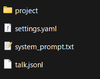
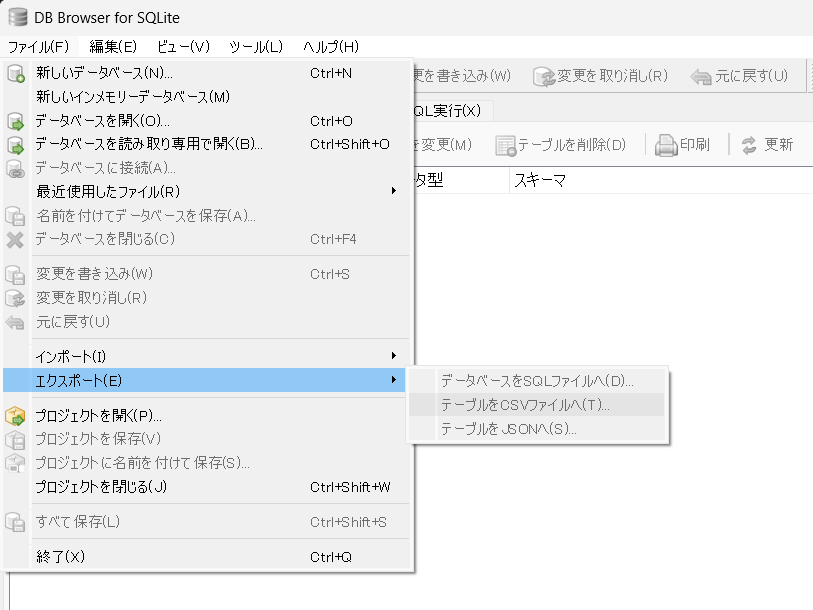
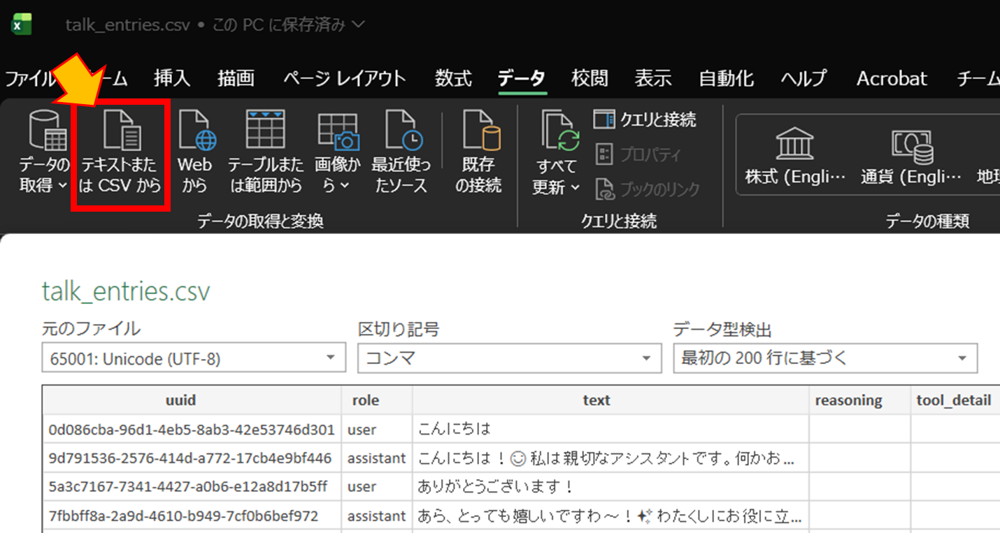

こだわり調整
基本的な使い方を、とにかく始めてみる(最速スタート) で学んだ人に、実用的にするためのアドバイスと情報です。
Chocolate LM Liteの機能について
最速スタートで紹介できていない機能を含め、以下のような機能があります。
(Howtoツールから引用)
本ページでは、このうち基本的なことを説明します。
ツールの調整などの細かい応用的なことは、応用機能のご紹介 で改めて紹介します。
主な特徴は以下の通りです：
- APIサービスやローカルLLMを設定し、自由な対話が可能
- シンプルな画面で初心者に優しい設計
- 複数のペルソナ(キャラクター)を作成・管理可能(それぞれにシステムプロンプト・モデル・メモリを設定可能)
- タイムスタンプ機能で、時間を考慮した対話が可能
- 自動コンテキストカットオフ機能により、最大長制限なく対話を継続できます
- 仮想スクロール機能で、大量の対話履歴も快適に閲覧可能
- 会話統計機能で、自分がどれだけ会話したか把握可能
- 短時間に大量の会話をした場合、休憩を促すメッセージを表示する機能もあります
- 古い履歴や画像はトークン数節約のため自動的に送信対象から外されます
- メモリ機能で、会話が長引いても重要な情報を保持可能
- Javascriptサンドボックス実行ツールで、正確な計算などが可能
- プロジェクトフォルダ管理機能で、資料を読んだりプログラムを書いたりできます。
- Webhook機能で、AIの発言をDiscordなど外部サービスに転送可能
- タイマーで自発的に発言する機能を搭載
- マルチモーダルLLMによる画像生成機能を備えます
- Model Context Protocolによる外部ツール拡張機能を備え、AIの機能を柔軟に拡張可能
- 定期的な自動アップデートチェック機能を搭載
ぜひChocolate LM Liteをお楽しみください！
注意
- ご利用の際は、各APIサービスの利用規約を遵守してください。
- 生成されたコンテンツの責任はユーザーにあります。
- 外部ツール呼び出しの際に承認や確認は行いません。
- 標準ツールは安全性を考慮していますが、MCPツールなど外部ツールの利用には注意してください。
- 各種ツールはオンオフおよび各種制限調整が可能です。必要に応じて調整してください。(既定では無効になっている機能もあります)
口調が崩れたり、指示が効かないときは
本アプリケーションでは、システムプロンプトに加えて、ポストプロンプトやキーワードナレッジを使うことで、より強力にAIに指示を与えることが出来ます。
ポストプロンプト
ポストプロンプトは、最新のユーザー発言に続けてAIに渡される追加の指示文です。
ポストプロンプトは会話履歴に残らず、最新の生成処理時に動的に適用されます。
一度有効にすると、無効にするまで毎回適用されます。
言語モデルの特性上、先頭に当たるシステムプロンプトを後から修正しても効果が薄い場合がありますが、ポストプロンプトは末尾(補完の直前)に追加されるため、より強力かつ即効性を持って指示を与えることが出来ます。
ペルソナの口調や、機嫌、行動などを矯正したり、速やかに変更・修正したい場合にも有効です。
この機能が有効の間、最新のユーザー発言は<user>タグで囲まれ、次に<system>タグで囲まれたポストプロンプトが続きます。
例: ユーザーがこんにちは、元気？と発言し、ポストプロンプトに必ず丁寧な口調で答えること。と設定していた場合、AIには以下のように渡されます。
より効果を強めたい場合は、システムプロンプトに以下のように追加してください。
キーワードナレッジ
ユーザー発言に含まれるキーワードに応じて、動的かつワンタイムでポストプロンプトを挿入する機能と考えてください。
キーワードナレッジも会話履歴に残らず、最新の生成処理時に動的に適用されます。
システムプロンプトに入れておくには大きすぎる知識や、即効性が求められる知識を与えるのに有効です。
特定の行動や知識を、合言葉に合わせて与えたい場合にも有効です。
ツールの使い方を忘れやすい言語モデルに対して、ツールの使い方をキーワードナレッジで与えることで、ツールを正しく使わせることも出来ます。
例えば天気といえば、東京の天気であり、天気の取得にはgoogleSearchツールを使う、などと与えることで、守る確率を格段に上げることが出来ます。
キーワードは、カンマ区切りで複数指定することも出来ます。
例えば住所を自宅, 家, うち, マイホームなどと複数指定しておくことで、より多くのパターンに対応できます。
簡易的なRAGのように使うことができますが、キーワードは完全一致であることに注意してください。
(ベクトルデータベースが必要な場合は、MCPで外部ツールを組み合わせてください)
例: ユーザー入力で自宅の天気を教えてと言う発言があり、自宅や天気にキーワードを設定していた場合、以下のようにAIに渡されます。
自宅の天気を教えて
<knowledge key="自宅">ユーザーの住所は東京都</knowledge>
<knowledge key="天気">天気の取得にはgoogleSearchを使う</knowledge>
より効果を強めたい場合は、システムプロンプトに以下のように追加してください。
ツールが悪さをするときは
- Howtoツールを呼び出してAIであることを認識してしまい、ロールプレイが出来ない
- 現在時刻が原因で、小説に現実の時間が反映されてしまう
- プライバシーに関する情報を扱っているので、メモリ機能などは無効にしたい
- 会話の統計情報をいちいち引き合いに出されて困る
そういう場合は、システム設定の応用設定からオフにできます。
すべてオフにすると、素の言語モデル機能のみになります。
詳しくは、応用機能のご紹介 を御覧ください。
ツールを使ってくれないときは
本アプリケーションでは、AIサービスのようにツールを積極的に使うような指示を与えていません。
そのため、AIがツールを使ってくれないときは、システムプロンプトやポストプロンプト、キーワードナレッジに「ツールを使うべき場面」を説明してあげてください。
主なツールの正式名は以下です。
- Howto: 本アプリケーションについての説明文を取得
- Eval: サンドボックス内でJavascriptコードを実行します
- UpdatePersonaMemory: 任意の短文が保存できるメモリの追加・更新(500文字以内)
- ReadProjectFile: プロジェクトフォルダ内のファイル内容を取得
- WriteProjectFile: プロジェクトフォルダ内にファイルとして保存
- GenerateImage: マルチモーダル言語モデルに画像の生成を依頼
MCPツールに関しては、各ツールの説明を参照ください。
データ共有の注意点
Danger
general.yaml というファイルは、他人に渡さないでください。APIキーが入っています。
メモリ機能・プロジェクト機能とかのファイルの場所
EXEファイルの下にdataというフォルダが出来ています。
その下に、persona_XXXというフォルダが有り、それがペルソナの本体です。
- project: プロジェクト機能のフォルダです。AIはこの中に何が入っているのかを知ることができ、テキストのみ読み書きできます。(サブフォルダは使えません。PDFなども対応していません)
- settings.yaml: 名前、モデルなどの設定が入っています。メモ帳で編集できます。壊すと全部消えます。
- memory.yaml: メモリ機能で保存されるメモリが入っています。メモ帳で編集できます。壊すと全部消えます。
- keyword_knowledge.yaml: キーワードナレッジの設定が入っています。メモ帳で編集できます。壊すと全部消えます。
- system_prompt.txt: システムプロンプトが入っています。メモ帳で編集できます。
- talk.sqlite3: 会話履歴が入っています。SQLite3形式が扱えるアプリケーションで確認・編集ができます。壊すと全部消えます。
- talk.jsonl.bak: 旧形式の会話履歴が入っています。
※これらのファイルは、必要が生まれるまで作成されません。
編集する際は必ずバックアップを取ってください。
EXEファイルの下にbackupというフォルダには、7日分の自動バックアップがあるので、壊れたときはそこから救出できるかもしれません。

Tips
SQLite3形式の会話履歴を確認・編集したい場合は、DB Browser for SQLite などのアプリケーションを使うと便利です。(Windows, Mac, Linux対応)
CSV形式などにもエクスポートできます。(Excelで開く場合は、データ→テキストまたはCSVからをクリックし、インポートしてください)



メモリの確認をしたい・アイコンや背景画像を設定したい
ペルソナ設定画面の下の方にスクロールすると、メモリや画像設定画面が出ます。


発言を編集したい
編集ボタンを押すことで編集できます。それより後の発言はすべて削除されます。

会話履歴を残して編集したい
ペルソナ一覧画面の「複製」を押すことで、会話履歴ごとペルソナを複製できます。

システム設定について
システム設定から以下を設定できます。
- 画面上のユーザーの名前 : 「あなた」ではなく別の名前で出したいとき
- 休憩お知らせ基準値 : 休憩お知らせの基準を上げたい・下げたいとき
- 会話履歴の最大トークン数 : 古い会話もAIに見てほしいとき (これは厳密なトークン数ではなく概算です)
- ローカルアクセスのみ許可 : ネットワーク内の他の端末からアクセスしてほしくないとき

ローカルLLMや他のサービスって使えるの？
使えます。ローカルLLMは、LM Studioで調べてみてね。
(ただし、高スペックのPCが必要になります。ここ1年で劇的に変化しているので、AIに聞くと使い物にならない超高価なものを提案されやすいので気をつけてね)
Tips
エンドポイント一覧
- LM Studio:
http://127.0.0.1:1234/v1 - Ollama:
http://127.0.0.1:11434/v1 - llama-server:
http://127.0.0.1:8080/v1 - OpenAI:
https://api.openai.com/v1 - Gemini:
https://generativelanguage.googleapis.com/v1beta/openai/ - Claude:
https://api.anthropic.com/v1 - OpenRouter:
https://openrouter.ai/api/v1 - NanoGPT:
https://nano-gpt.com/api/v1 - Ollama Cloud:
https://ollama.com/v1/
複数ペルソナを同時に動かしたい
本アプリケーションでは対応していません。
ポート番号を変えて、他のフォルダに分けることで、複数起動することは出来ます。
画像生成
画像生成が出来ます。
画像生成は、各社仕様がバラバラなので、OpenRouterのみ対応しています。
システム設定の応用設定の最下部に、以下のように設定してください
(初期設定では無効になっています。)
- 画像生成を有効化: オン
- 画像生成LLM Base URL:
https://openrouter.ai/api/v1 - 画像生成APIキー:
OpenRouterのAPIキー - 画像生成モデル:
google/gemini-2.5-flash-image
現在使えるモデルはこちら(日々増えています)
動作確認済みのモデルは以下です。
- google/gemini-2.5-flash-image
- openai/gpt-5-image
- openai/gpt-5-image-mini
Tips
画像生成はより高価なため、簡易的なロックが掛かっています。
自分が頼んだのに「画像生成は高価なためユーザーからの明示的な要求時のみ実行可能です。」というエラーで失敗するときは、「ユーザーが頼んだと設定して」とお願いしてみてください。
なお、このロックは万能ではないため、タイマー機能をオンにしたまま画像生成を有効にしてると、次々画像を作られてしまうことがあります。「画像生成を有効化」は、不要なときはオフにしておくことをおすすめします。
もっと本アプリケーションの機能を詳しく知りたい場合は、応用機能のご紹介 を御覧ください。